PROGRAMME
EDITO / INFOS PRATIQUES
ATELIERS
TOUTE LA PROG EN DÉTAIL
[ À LA LUNE DU JOURNAL ]
VENDREDI 00:15 > 01:00 Secret Spot
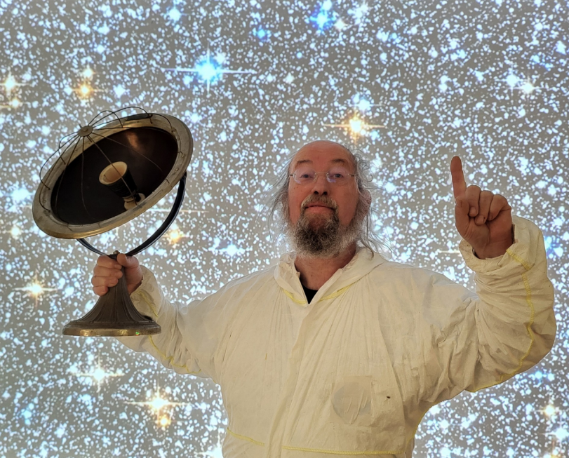
« À la Lune du Journal » est un spectacle poétique et scientifique qui mêle littérature, humour et astronomie, avec des textes de Queneau, Prévert, Calvino, et des instruments insolites (thérémine, waterphone). Proposé par l’Observatoire des Baronnies Provençales.
Le spectacle sera joué vendredi soir après une courte marche nocturne vers un point d’observation. En cas de mauvais temps, le spectacle sera reporté au lendemain à la même heure.
[ ACQ ]
SAMEDI 18:00 > 19:00 Bar le 14,5
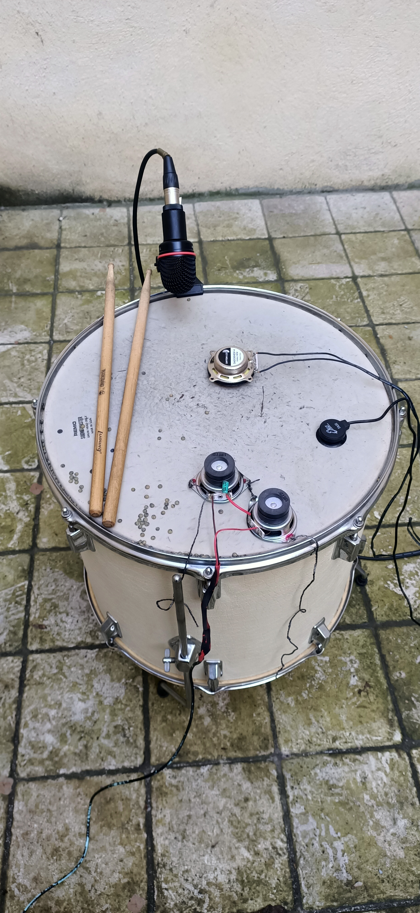
Acq présentera trois performances ce week-end : Acq mêle peaux qui vibrent, larsens et rythmes , Clepsydre, transforme une horloge à eau en séquenceur électronique, et Bontempi, du drone avec des orgues Bontempi détournés.
[ ALEXIS MALBERT ]
SAMEDI 10:00 > 18:00 les Berges de Drôme
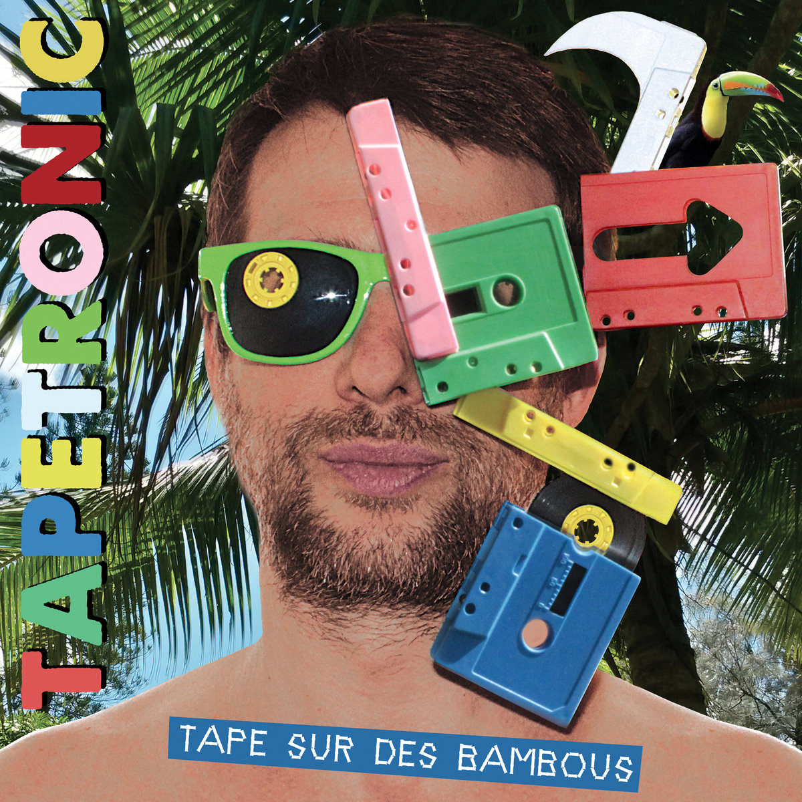
Alexis Malbert (alias TAPETRONIC) est un musicien et artiste plasticien spécialisé depuis les années 90 dans la création d’objets sonores, de machineries et de dispositifs interactifs. Il interroge nos relations aux technologies et à notre environnement avec une approche curieuse aussi artistique que scientifique. Inventeur, performeur, éditeur, cuisinier bricoleur touche-à-tout, chercheur et animateur, il se consacre aujourd’hui en majeure partie à la conception d’ateliers jeunes et tous publics, considérant ces ateliers comme des créations à part entière. La motivation y est celle du dialogue, de la rencontre, du partage des savoirs, du lien social, de la transmission, du goùt pour l’expérimentation et l’invention...
Ce week-end, il animera samedi sur les Berges de Drôme les ateliers Cantine Orchestra et Sonic Billes.
[ ANDY GUHL ]
VENDREDI 20:30 > 21:30 le Temple
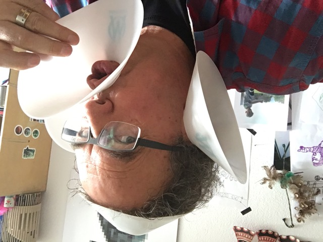
Andy Guhl est un pionnier suisse de la musique électronique expérimentale et du circuit bending. Dès les années 1970, il explore la modification d’objets électroniques du quotidien (radios, calculatrices, jouets) pour en détourner les sons, bien avant que cette pratique ne devienne un mouvement artistique à part entière. Co-fondateur du duo Voice Crack avec Norbert Möslang, il a marqué l’histoire de la musique noise et improvisée, mêlant architecture, art sonore et performance live.
Son approche, à la fois technique et poétique, a inspiré des générations d’artistes à repenser le son comme un matériau brut et malléable. Avec plus de 30 albums à son actif, il reste une figure majeure de la scène expérimentale européenne, connu pour ses installations sonores et ses concerts où l’électronique craque, grésille et chante.
Il performera vendredi soir au Temple de Saillans en duo avec Erick M puis en solo pour un live audiovisuel.
[ ARACHNOPHONE ]
SAMEDI 10:00 > 18:00 les Berges de Drôme
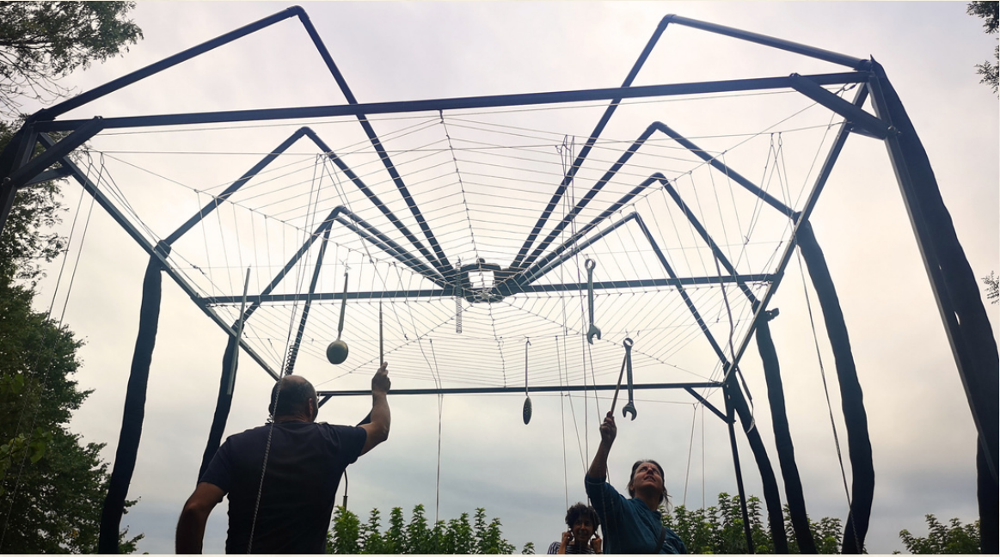
L’Arachnophone est une sculpture sonore immersive où le son se touche, se partage et se découvre par le corps. Chaque fil de cette toile géante transmet des vibrations directement aux doigts des participants, créant une écoute tactile, intime et troublante. Le public, connecté à la structure et les oreilles bouchées, expérimente une conduction osseuse qui fait naître le son au cœur de la tête. Une performance sensorielle pour tous (dès 5 ans), où silence, concentration et curiosité transforment chaque session en un récital minimaliste et poétique. Entre lutherie sauvage et architecture artisanale, l’Arachnophone invite à réapprendre à écouter – autrement, ensemble.
[ ARNICA MONTANA ]
SAMEDI 20:00 > 21:00 les Berges de Drôme
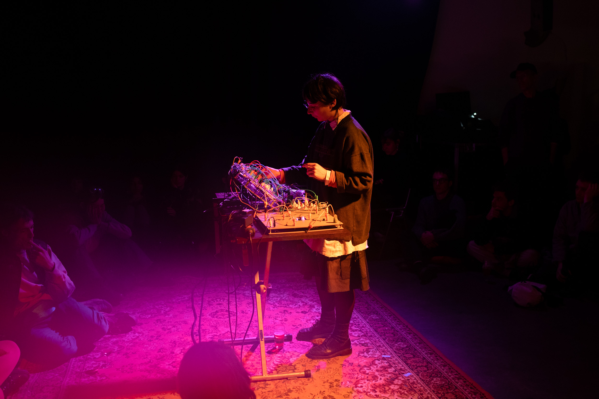
Hélène Blondel est une artiste sonore, musicienne et plasticienne, vivant et travaillant à Paris. Son travail se concentre autour de l'usage de la synthèse analogique, via le travail du circuit, la fabrication de synthétiseurs et d’installations sonores autonomes, et la composition électroacoustique.
Arnica Montana joue une musique expérimentale sur ses synthétiseurs analogiques diy. Sa pratique musicale est immergée dans la synthèse analogique, en dialogue avec l'électricité au coeur du circuit. Elle construit des improvisations émotionnelles, à la fois délicate et abrasives, qui prennent place dans les infrabasses et les ultrasons.
[ ASTRAL ARDECHX ]
DIMANCHE 19:00 > 20:00 Plus loin sur les Berges de Drôme...
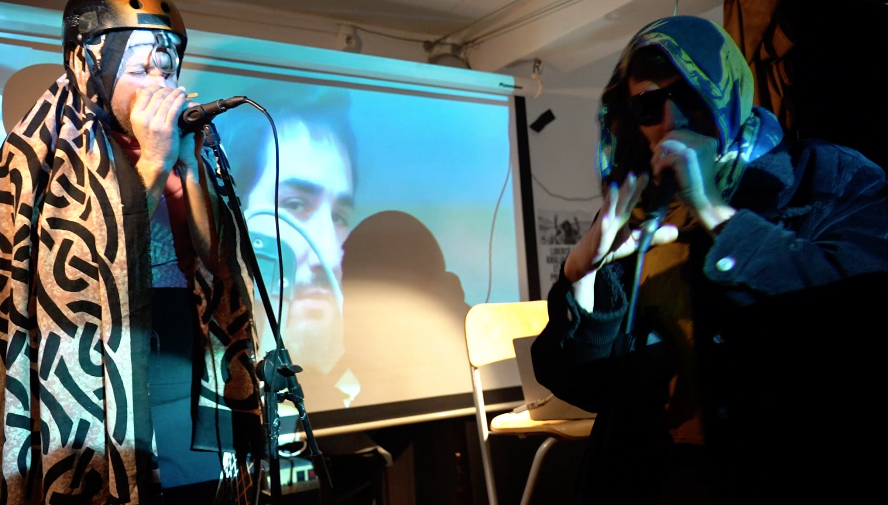
Né dans les gorges de l'Ouvèze, ce trio est composé de moniteurs de chamane-kayak musicoterapeutes. À l'origine formation de psytranse vocale, le répertoire s'agrandit maintenant vers l'appropriation culturelle expérimentale et la neuro diversité
Un instumentarium varié (trompette préparée, automates, flutes cosmiques, légumes et animaux totems...) croise des techniques de transe avec une improvisation bruitiste. Les trois guides proposent à l'audience une expérience mystique situationniste tribale ancrée dans un syncrétisme local globalisé..
[ AUTOGRATT ]
SAMEDI 10:00 > 18:00 les Berges de Drôme
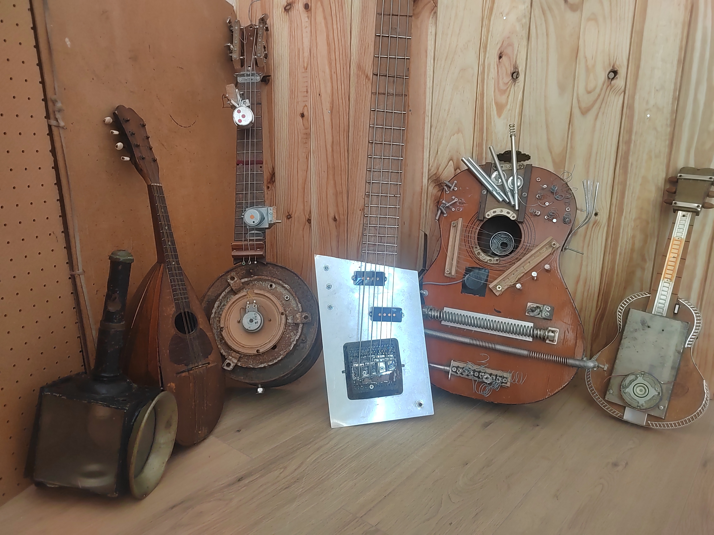
Violons mécaniques, mandolines automatiques, guitares-synthé ou encore cigar box ! Voici une collection de guitares hybrides pas comme les autres… Animé par Rebecca Zidhane
Active au sein des associations Micro Contact & Bandes Passantes, elle crée des instruments insolites et objets sonores, souvent électroniques.
Elle anime toute l’année des ateliers 'lutherie sauvage" ouverts à différents publics, où l’on explore le son par le bricolage et l’expérimentation.
[ AVANCEZ DANS L'OMBRE ]
VENDREDI 21:30 > 23:00 Le Temple
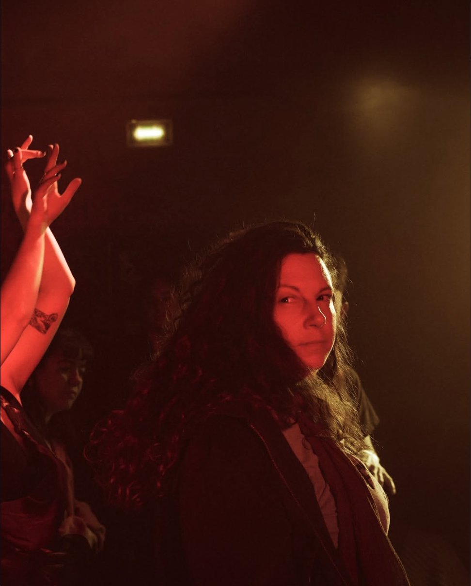
Performance sonore construite en strates avec plusieurs médiums : live coding, voix au looper, ainsi que des collages d’extraits sonores, coupés/remontés, déformés parfois. Les mots clés des collages sonores sont repris en poème/code et créent la mélodie. Ce tout nouveau set aborde la loi de 1965, permettant aux femmes d’avoir notamment un compte bancaire. Il questionne la position des femmes dans la société, au travail et les options limitées qui leur sont offertes. La charge mentale qui en découle.
Marlen Bertoux travail ses sets comme une strate entre plusieurs médiums : elle mêle le live coding, des voix en live cumulées avec un looper, ainsi que des extraits sonores, coupés et remontés. Ses thématiques de travail incluent le monde paysan d’où elle est originaire, la position des femmes dans la société et les options limitées qui leur sont offertes.
[ AZERTYPE ]
VENDREDI 21:30 > 23:00 Le Temple
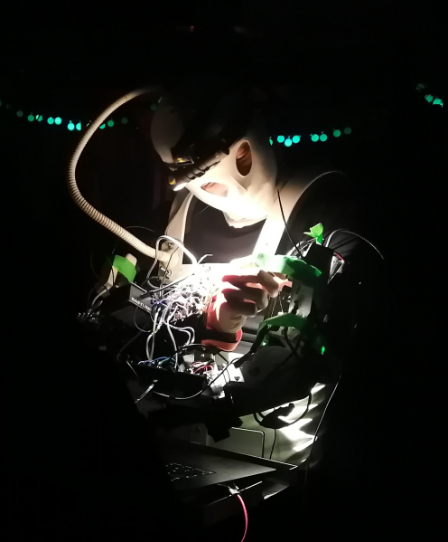
**Pokemon n450 — type cyborg**
Certains dresseurs affirment avoir été sauvés par un **azertype sauvage**. C’est un Pokemon extrêmement rare et au **grand cœur**.
C’est un Pokemon solitaire doté d’une **sensibilité hors du commun** grâce à ces multiples capteurs **bio-chimique**, il est très sensible aux variations de son environnement et a besoin d’être stimulé en permanence.
Déchaîner sa colère serait la pire chose à faire, car malgré son tempérament pacifique, il maîtrise des **attaques dévastatrices** comme **Rayon hypomaniaque**. Si vous le mettez en colère, il vous exterminera ou s’autodétruira en essayant.
La plupart du temps, il se cache l’hiver et ne dort jamais l’été.
On raconte qu’il baragouine des choses que personne ne comprend, pas même les siens.
Difficile à capturer, n’espère pas lui faire bouger le moindre petit doigt à moins que vos intentions soit noble et juste.
Toute échange d’azertype est donc à bannir.
On raconte que son expression favorite « non », et que ce Pokemon adore les cookies.
L’individu Baya, dit **Azertype**, est un artiste franco-ivoirien dont la pratique croise musique, design, arts numériques et performance. Après cinq années passées dans le stylisme, il s’oriente vers la musique en se formant au conservatoire de Pantin en musique électroacoustique.
Depuis 2019, il développe un projet de musique expérimentale articulé autour d’un instrument-exosquelette et du live-coding, et forme le duo **Cyberflemme** avec l’autrice **Leïla Chaix**.
Son travail prend appui sur sa **neurodivergence** pour déplacer les normes, questionner les structures de pouvoir et faire de la vulnérabilité un **levier** politique et esthétique.
[ BALIN BALAN ]
VENDREDI 18:00 > 19:00 Galerie Les Arts de la Daraize
SAMEDI 11:00 > 18:00 Galerie Les Arts de la Daraize
DIMANCHE 10:00 > 15:30 Galerie Les Arts de la Daraize
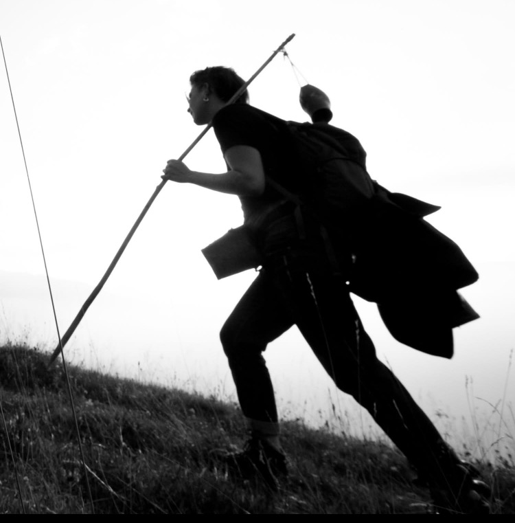
À l'occasion de l'invitation d'Iris Kaufman pour sa conférence-performance Beau Bruit, Micro Contact vous propose de voir et faire sonner en exclusivité sa collection personnelle de cloches et sonnailles, dans une scénographie tout à fait bancale de Yusuf Henni, qui donnera balin-balan à la galerie des Arts de la Daraize les airs d'une bergerie provençale dont le berger et le troupeau auraient disjoncté de concert.
La collection fera tout aussi balin-balan un tour dans le village et alentours de Saillans le dimanche après-midi, déployant l'exposition dans l'espace rural en festival.
[ BATTLE BREAKCORE ]
SAMEDI 10:00 > 18:00 les Berges de Drôme
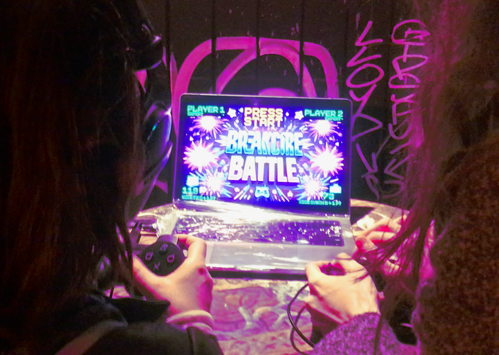
Enfin un jeu vidéo dont le but du jeu est de faire n'importe quoi, n'importe comment, le plus vite possible ! Tout cela pour créer la musique la plus adaptée à vos exigeantes oreilles d'audiophiles ! Venez essayer le mode "contre la montre", le mode "multiplayer", le mode "expert" ! Et peut-être que vous réussirez à battre le boss final (un croisement entre Aphex Twin, une licorne, et un martien) !
[ BEAU BRUIT ]
SAMEDI 16:30 > 18:00 Place de la Daraize
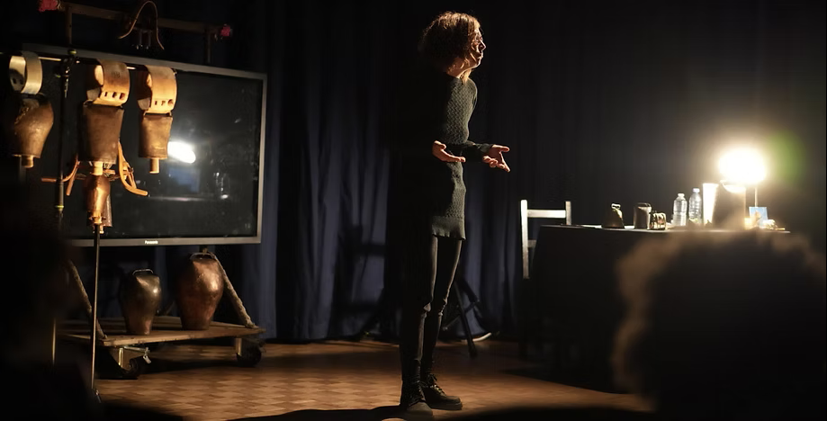
Conférence-performance sur les cloches et sonnailles du pastoralisme transhumant Plongez dans l’univers sonore et poétique des transhumances, où cloches et sonnailles dessinent des paysages acoustiques uniques. Iris Kaufmann, artiste et ethnologue, y explore la dimension paramusicale, technique et culturelle de ces objets, révélant comment éleveurs et bergers deviennent, sans le savoir, des compositeurs de paysages sonores. Entre récits ethnographiques, théâtre d’objets et compositions sonores, cette conférence-performance mêle recherche scientifique, immersion sonore et visuelle, donnant la parole à ceux qui façonnent ces musiques du quotidien.
[ BIOS ]
DIMANCHE 10:00 > 10:30 Place de la Daraize
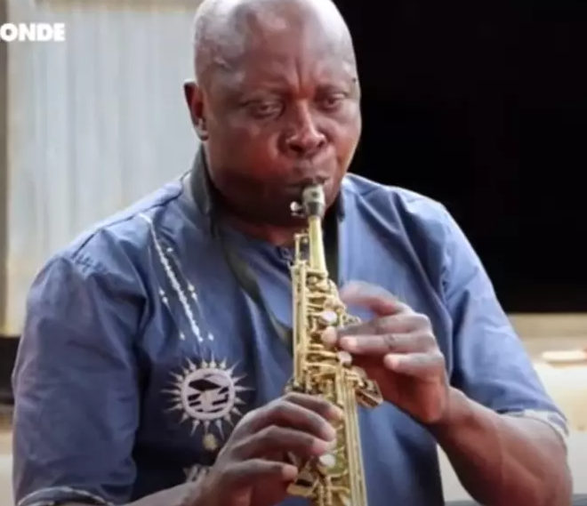
Bios est une performance d’improvisation libre au saxophone par Doro Dimanta, artiste tchadien emblématique, pionnier de l’afro-jazz et du Baguirmi jazz. Saxophoniste, conteur et explorateur sonore, Doro Dimanta puise dans les traditions musicales de son terroir natal et dans le jazz pour créer un langage unique, où chaque note devient une parole, une histoire, une émotion.
[ BIPTUNE ]
SAMEDI 10:00 > 18:00 Les Berges de Drôme
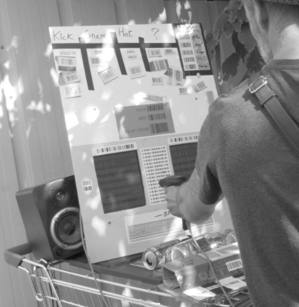
Le biptune est un séquenceur musical qui pourrait ressembler à un caddy
trop rempli.
Les utilisateurs peuvent agir sur le biptune grâce à une douchette (un
scanner à codes-bar).
Les codes-bar sortis de nos poches deviennent de nouvelles sources
sonores.
[ BOB MILÈ ]
SAMEDI 10:00 > 18:00 Les Berges de Drôme
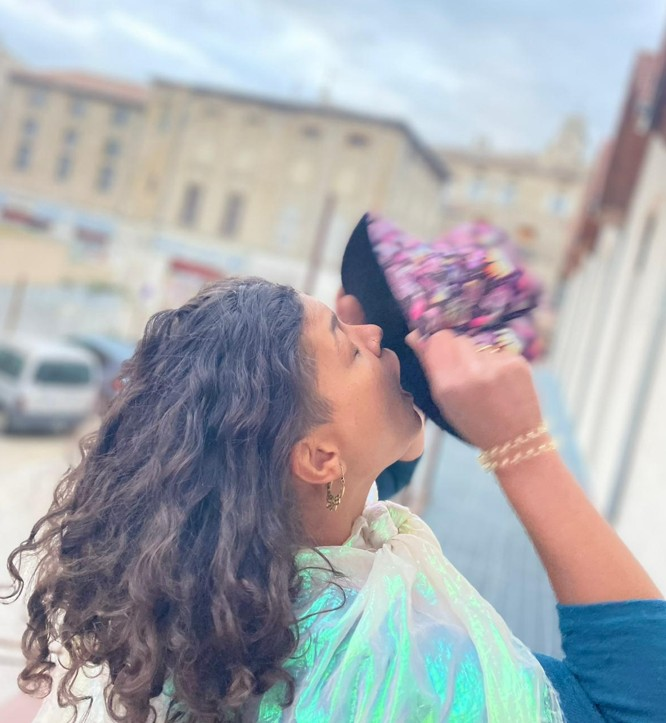
"En chantant une chanson de Bob Marley avec des amis, le bob de Milèna est tombé par hasard devant son visage. Parce que The show must go on, elle a continué à chanter et à découvert la puissance de l'effet sonore du Bob. Le Didjeribob était né et c'est tout naturellement que son inventrice décida de prendre pour nom d'artiste Bob Milè. Impro et good vibrations (dans le bob) au rendez-vous."
[ BONTEMPI ]
SAMEDI 11:00 > 12:00 Place de la Daraize
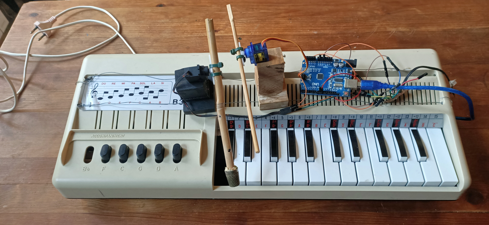
musique drone de plusieurs bontempi
[ BYTEBEAT ]
SAMEDI 10:00 > 18:00 Les Berges de Drôme
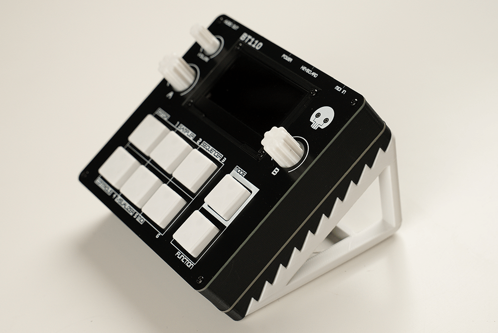
Présentation d'un synthétiseur utilisant la synthèse bytebeat, un mélange de mathématiques et d'informatique.
[ CARTE SONORE ]
SAMEDI 10:00 > 18:00 les Berges de Drôme
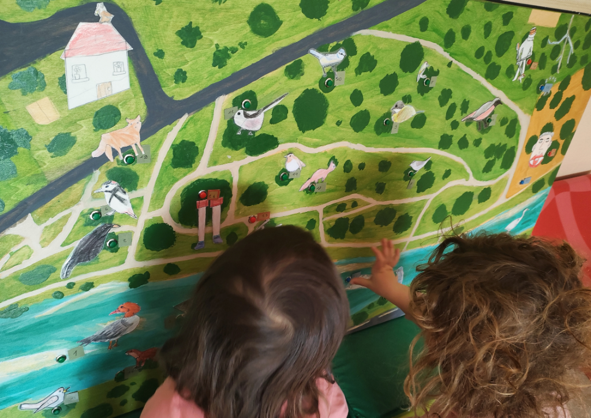
À Saillans, des élèves de CM2 ont exploré les bords de la Drôme à travers une approche sensible du paysage sonore. Accompagnés par un intervenant nature et deux artistes membres du collectif Micro Contact, ils ont enregistré, identifié et classé les sons du milieu naturel et humain. Ce projet a mêlé écoute, création artistique et sensibilisation à l’environnement. Il a abouti à une cartographie sonore interactive, sous forme de fresque en bois. Le public est invité à activer différents points pour découvrir les sons collectés. Une manière simple et vivante de découvrir le village autrement, en prêtant attention à ce que l’on entend.
[ CLEPSYDRE ]
DIMANCHE 15:00 > 12:00 Place de la Daraize
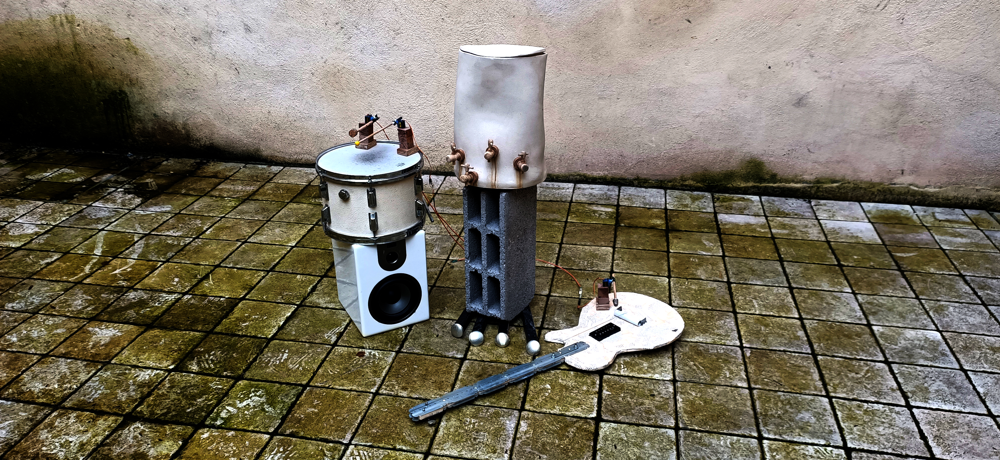
Objet de mesure détourné en séquenceur à eau électronique.
[ COOKIE COLLECTIVE ]
VENDREDI 21:30 > 23:00 Le Temple
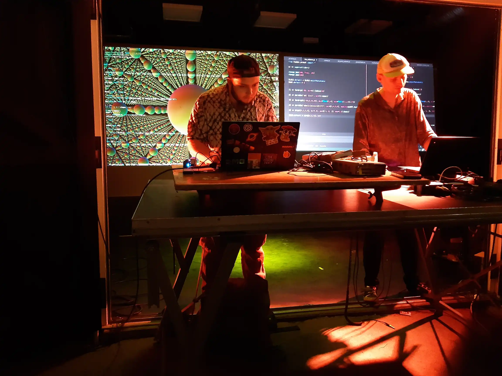
Cookie Collectif est un groupe d’artistes numériques spécialisés dans la création en temps réel, explorant des univers variés : jeux vidéo expérimentaux, installations interactives, vidéo mapping, demoscene, algorave et bien plus. Le collectif organise notamment des Cookie Party, festivals d’art numérique où se croisent démos, jeux vidéo alternatifs, machinimas, concerts et performances live. Leurs live coding jams permettent aux artistes de créer des visuels et des sons devant le public, dans une ambiance collaborative et improvisée. Ils publient aussi des fanzines mettant en lumière les multiples facettes de la création numérique. Ouvert à toutes et tous, le Cookie Collectif est né à Paris mais rassemble désormais des membres dans plusieurs villes et pays. Une communauté où l’expérimentation, le partage et la curiosité sont au cœur de chaque projet.
[ CRASHBOARD ]
SAMEDI 10:00 > 18:00 Les Berges de Drôme
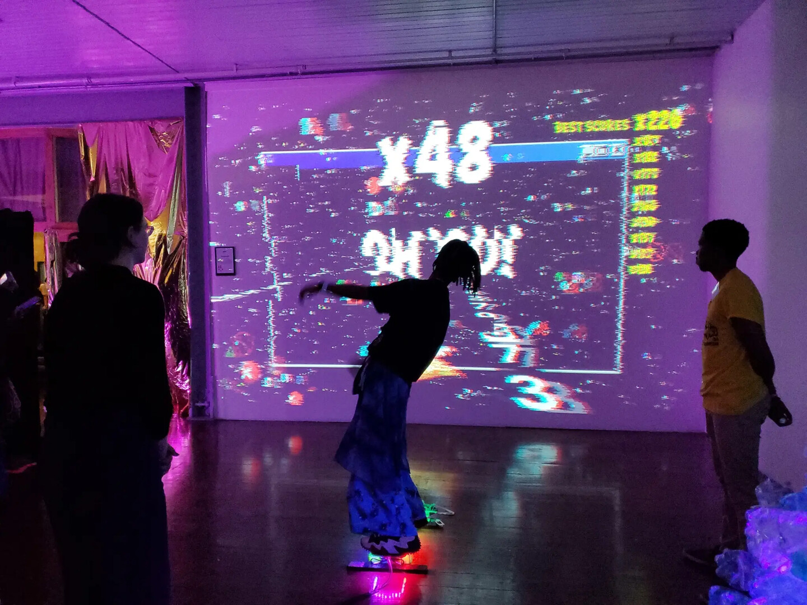
Crashboard est un jeu de surf dans le cyberespace contrôlé par un skateboard.
[ DANAËL VALBERT ]
SAMEDI 10:00 > 18:00 Les Berges de Drôme
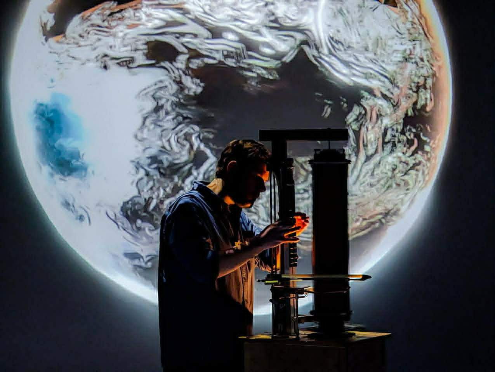
Danaël est un artiste inventeur basé à Lyon, sa pratique va de la lutherie expérimentale aux marionnettes robotisées en passant par la peinture transparente. Diplômé des beaux-arts d’Aix-en-Provence, il joue maintenant du kebab à travers le monde.
Kebab symphonie est une performance basé sur les gestes du chef kebabier, les instruments de musique acoustique et électroacoustique sont conçu sur la gestuelle de la découpe de la broche et des légumes.
[ DARK CLIMATE ]
DIMANCHE 20:00 > 20:30 La Loco
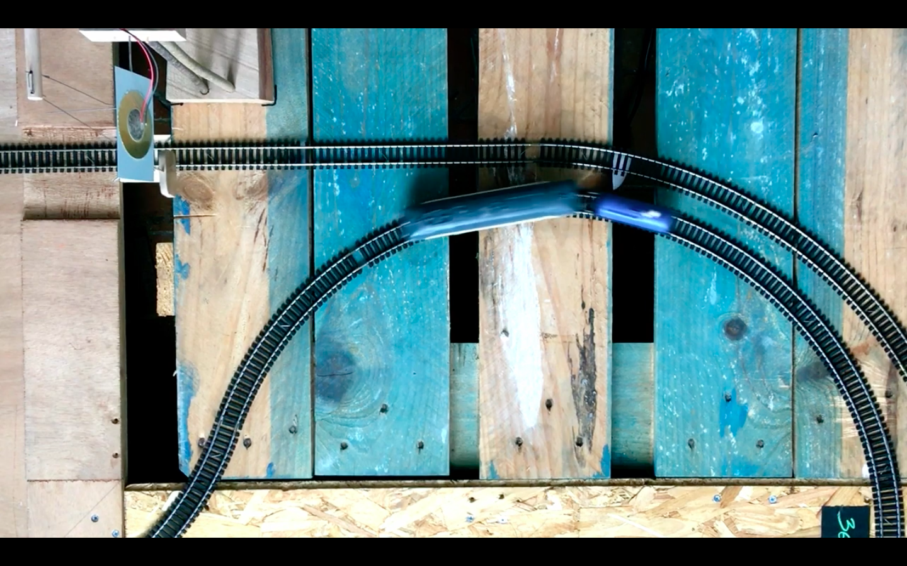
Dark Climate est un court-métrage immersif de Julia Hanadi Al Abed et Laurent Tixador, né de l’installation Non-human Dark Ambient. Ce film capture l’essence d’un voyage sonore et visuel, où un train miniature active des instruments bricolés, créant une mélodie mouvante et expérimentale. Entre ombres et sons, l’œuvre explore une atmosphère poétique et mystérieuse, invitant le spectateur à une expérience sensorielle unique, à la frontière de l’art et de l’écologie.
[ DÉLUGE ]
VENDREDI 21:30 > 23:00 Le Temple
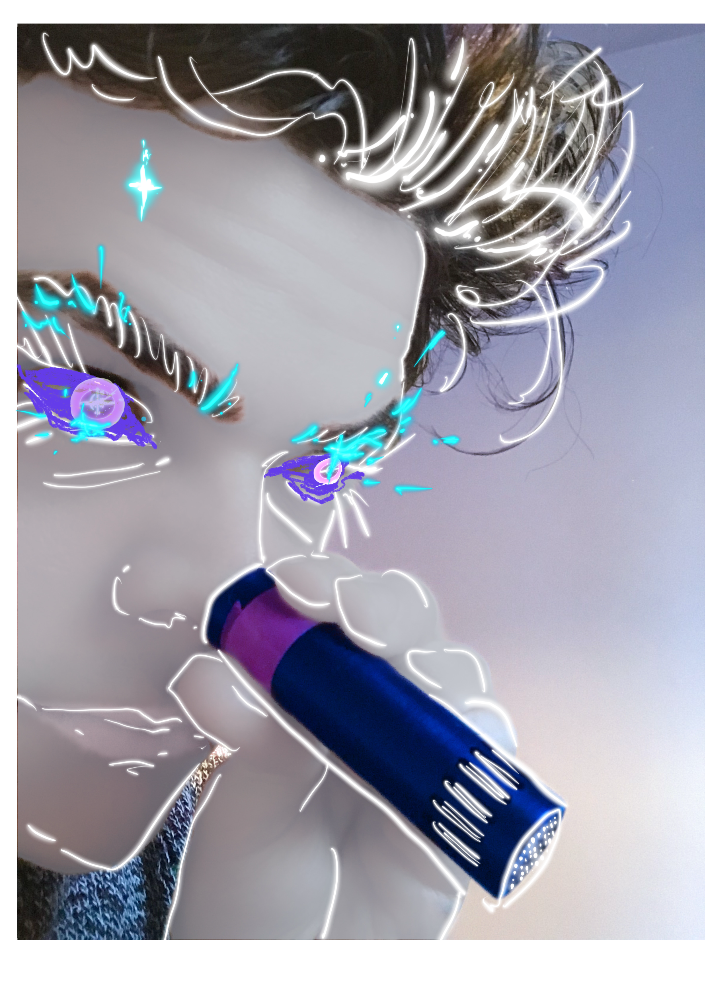
"Tempête médiatique, moulin à paroles, logorrhées acides
il faut couper la langue aux menteur·euse·x·s et aux crécelles
les vents bruiteux stabiliseront les torrents"
"Je pense que mon plat préféré en ce moment c’est les aubergines
vapeur au sésame et grillé à la poêle. J’utilise supercollider depuis quelque temps
car ce langage va me faire accéder aux sons que je fantasme, j’espère. Il me
semble aussi que j’aime le sentiment de liberté qu’il procure : tu décris, sa crie."
[ DON QUI FLOTTE ]
DIMANCHE 15:30 > 16:30 Bords du Rieussec
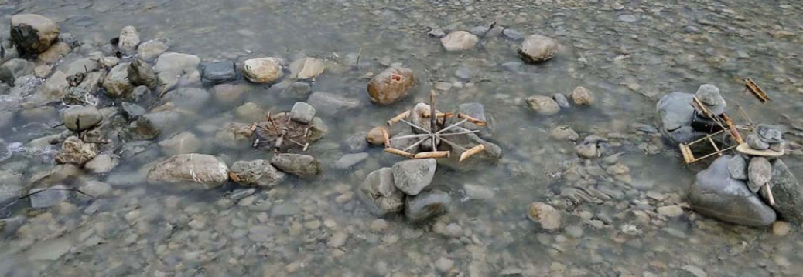
Don Qui Flotte est une installation mécanique amphibie installée au bord de la Drôme ou du Rieussec qui s’anime grâce au courant. Le mécanisme mis en mouvement par l’eau émet des sons percussifs contre un objet, fait vibrer des cailloux, des branches, crée des petits vortex dans l’eau ou des chocs à la surface. Les sons sont captés par des micros, des trompes, parfois transformés, puis dispersés à différents niveaux d’écoute grâce à un dispositif sonore autonome sur batterie.
[ EAT RABBIT ]
SAMEDI 23:00 > 00:00 Les Berges de Drôme
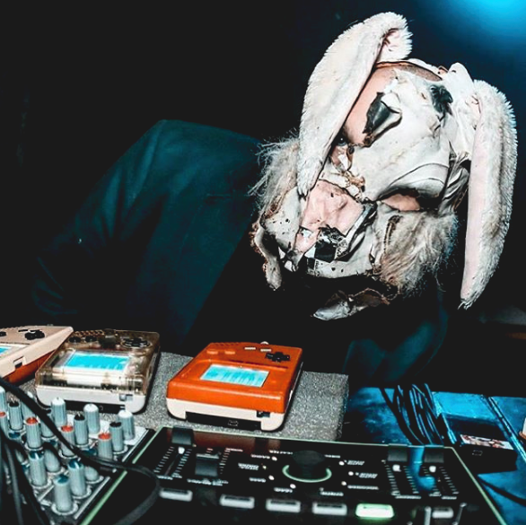
Eat Rabbit est un artiste protéiforme, figure majeure de la scène chiptune et des musiques électroniques alternatives. Apparue au début des années 2000 autour du collectif Micromusic, cette créature aux mille visages est à la fois performer de lives électrisés, activiste musical à Lyon, compositeur, directeur artistique et graphiste. Connu pour ses sets hybrides mêlant énergie brute, humour décalé et créativité sans limite, Eat Rabbit incarne une approche défrichante et ludique de la musique, entre improvisation, détournement et performance visuelle.
[ ÉRIK M ]
VENDREDI 21:30 > 22:30 Le Temple
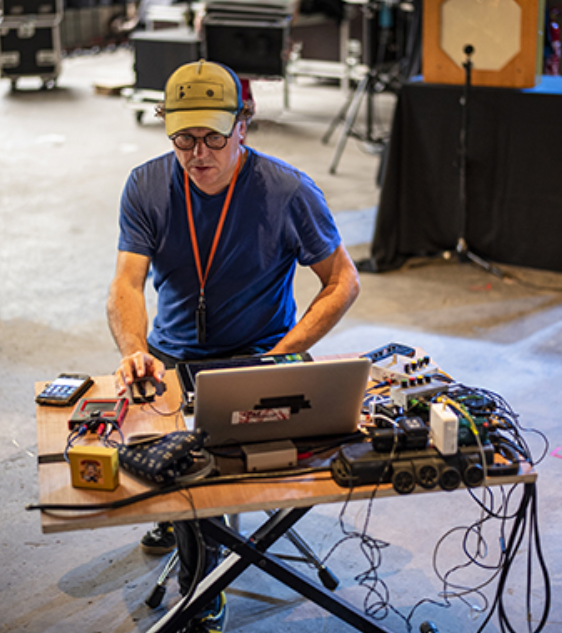
ErikM est un artiste sonore et visuel, musicien de digitale concrète et compositeur en musique mixte. Actif depuis 1992, il traverse les scènes indépendantes et institutionnelles en développant une approche résolument prospective du médium technologique — œuvres acousmatiques, musiques mixtes pour ensembles (Ensemble Intercontemporain, Les Percussions de Strasbourg, Dedalus…), collaborations avec Luc Ferrari, Christian Marclay, Thurston Moore, Jean-Luc Nancy, Mathilde Monnier, Fm Einheit et bien d'autres. Une vision kaléidoscopique qui met en tension l'intime et le politique, le populaire et le savant.
Ce concert marque la première rencontre en duo d'Andy Guhl et d'ErikM depuis la dissolution de Poire_Z — groupe fondé avec les membres de Voice Crack (Andy Guhl, Norbert Möslang) et Günter Müller, actif au tournant des années 2000. Andy Guhl, figure centrale de la musique expérimentale européenne et pionnier des cracked everyday electronics, retrouve ici ErikM, référence de la digitale concrète, pour une rencontre entre deux univers qui partagent une même exigence du son.
[ GALETTES NOIZES ]
SAMEDI 12:00 > 14:00 les Berges de Drôme
 (descriptif à venir)
(descriptif à venir)
[ GSPMT ]
DIMANCHE 10:30 > 12:00 Place de la Daraize > Place Centrale
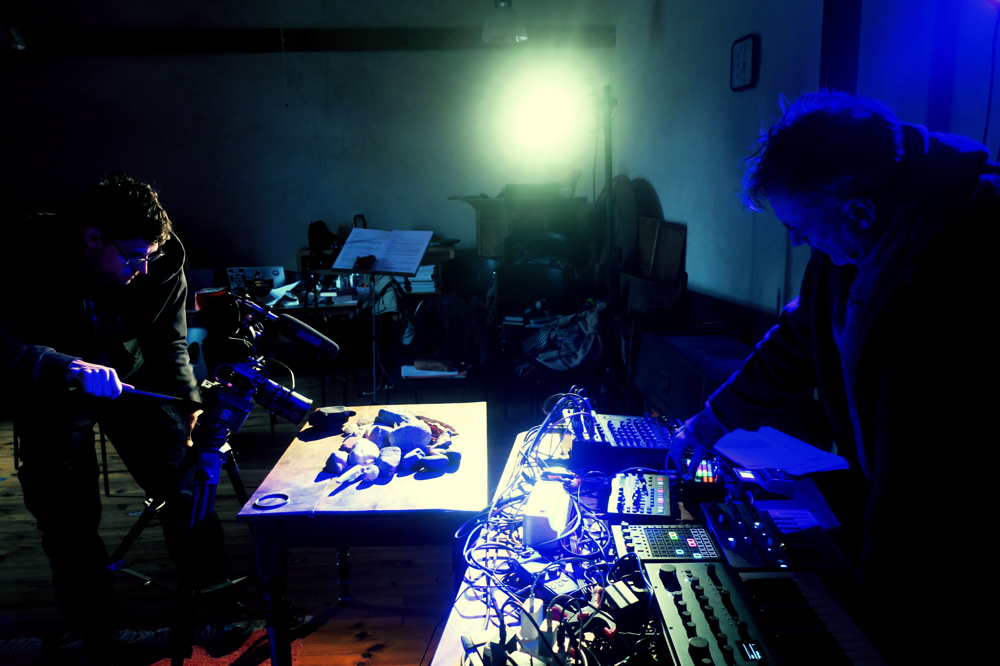
Explorations sonores de l’instant et du lieu. Entre ambiant expérimental, musique de documentaire animalier et plongée dans l’onde sonore.
GSPMT utilisera pour la première fois « le piano », une structure mobile et sonore autonome pour faire entrer en résonance les espaces et les sons. Son parcours le mènera dans différents lieux de Saillans.
[ GRAVURE ]
SAMEDI 10:00 > 18:00 les Berges de Drôme
Stand de gravure sur Tetrapack
[ GROSSE CAISSE ]
DIMANCHE 11:00 > 12:00 Place Centrale
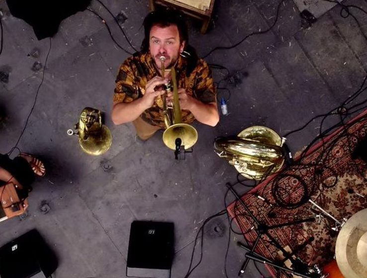
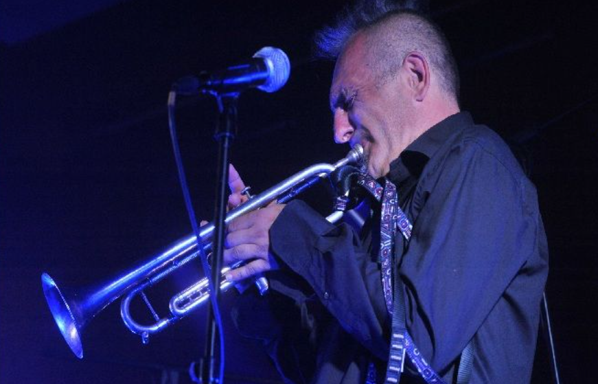
Le duo « Grosse Caisse » est né en 2022. Gabriel Monnier et Radoslaw Klukowski pratiquent les mêmes instruments (les cuivres de toute taille). Ils commencent par créer un laboratoire d'exploration sonore, chercher d'autres sonorités, distorsions, déformations, manières d'expression et de narration . Dès le début de la rencontre ils ont envie d'employer une troisième source sonore : les bandes magnétiques. Grâce à ce « troisième musicien » ils peuvent épaissir plus facilement leurs textures sonores, dialoguer avec la bande, jouer avec la forme aléatoire de l'enregistrement live, avec la longueur et la vitesse de lecture des bandes... Dans leur musique ils oscillent entre le bruitisme, la transe, le quintet de cuivres et la bonne vieille fanfare.
[ INCONTROLAB ]
SAMEDI 10:00 > 18:00 Les Berges de Drôme
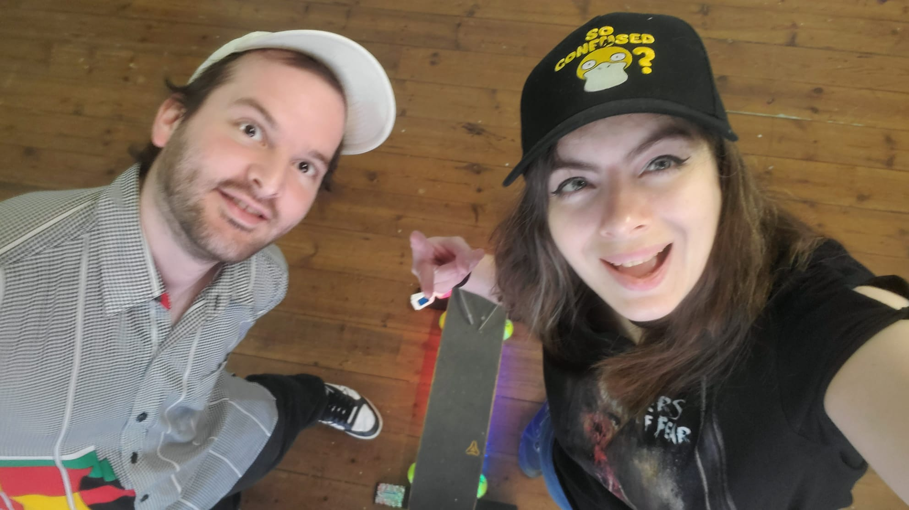
Le collectif Incontrolab composé d’Emilie Breslavetz et de Léon Denise, présente Crashboard, un jeu de cyber espace avec un skate connecté et YOGAÏE, un jeu loufoque avec une balle de yoga.
Léon Denise est développeur et concepteur, travaillant sur des expériences de réalité virtuelle, des installations interactives, des projections immersives et des dispositifs ludiques.
Émilie Breslavetz est game designer et artiste ludique, travaillant sur des jeux expérimentaux, des contrôleurs alternatifs, des installations interactives et des dispositifs de jeu immersifs.
[ JB DEÜTRE ]
SAMEDI 10:00 > 18:00 les Berges de Drôme
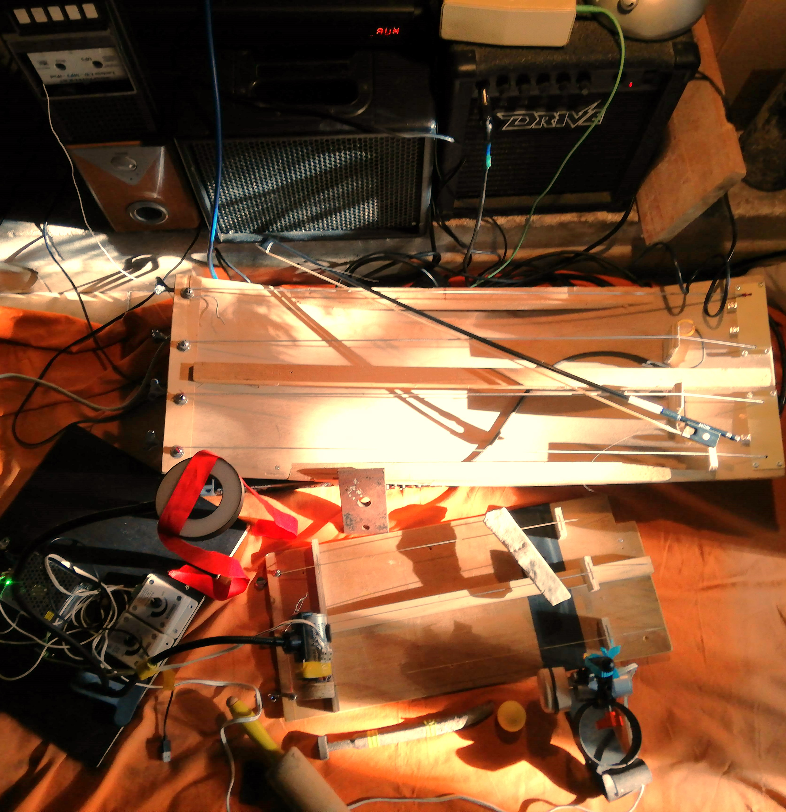
Deütre est un duo d'improvisation formé par Jb Degorces et Martin Mor qui expérimente à partir d'instruments fabriqués dans une forme de lutherie rudimentaire à base de planches, cordes, cailloux et ferrailles, percutées et frottées. Pour la foire de MicroContact, jb deütre présente le dispositif agrémenté de petits automates tout aussi rudimentaires qui jouent sur un acousmonium de fortune.
[ KARA-HACKÉ ]
DIMANCHE 20:00 > 22:00 La Loco
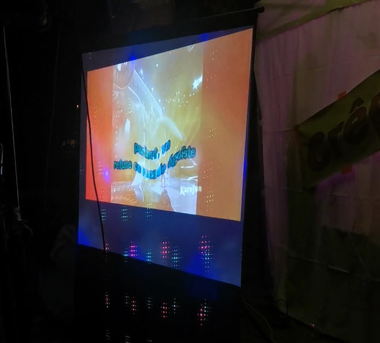
Karaoké hacké. (changements de pitch et de vitesse de lecture, apparition de gifs à l'image pour déconcentrer ...etc)
[ LA MEUTE ]
SAMEDI 10:00 > 18:00 les Berges de Drôme
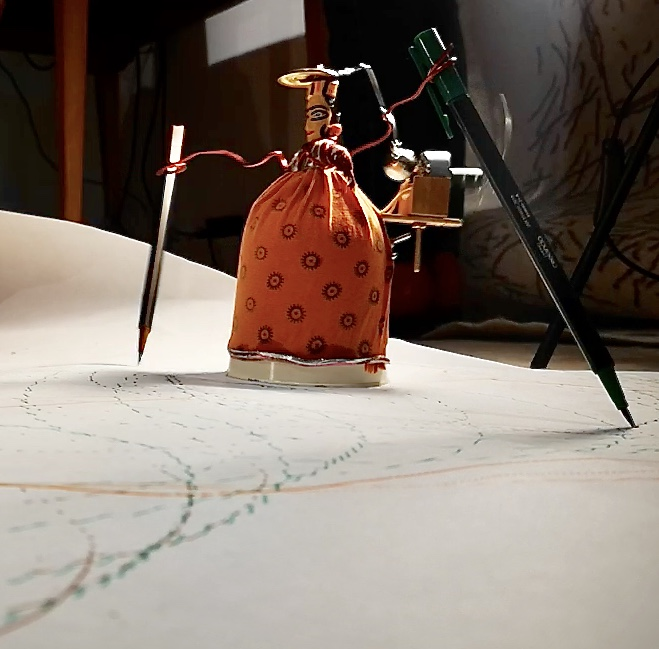
La Meute tourne en rond, recule, insiste, dévie. Elle ne va nulle part, elle erre joyeusement. Fuyant le cadre ou à l'affut de la rencontre, elle s’emmêle les trajectoires, dans une danse maladroite et vivante. Elle trace une écriture bavarde, indéchiffrable, et compose une matière sonore agglomérée de rythmes mécaniques instables et de frottements fortuits.
[ LA PLAGE ]
VENDREDI 18:00 > 0:00 le Temple
SAMEDI 12:00 > 0:00 les Berges de Drôme
La cantine de La Plage vous accueille de 18h a minuit le vendredi, et de midi a minuit le samedi. Au menu, galettes végé, frites, pizzas, et surprises! Entre 5 et 10 balles, une partie des bénéfices est reversée a l'orga du fest, bon appétit!
[ LA VOIX DE SON FANTÔME ]
DIMANCHE 18:00 > 19:00 Plus loin sur les Berges de Drôme...
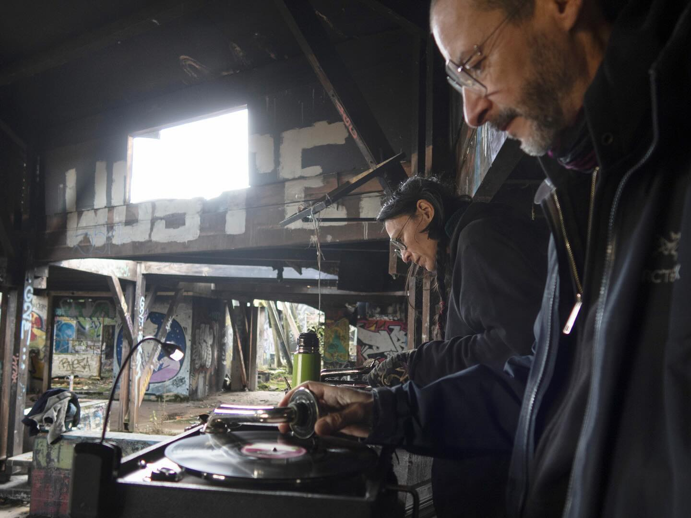
La Voix de son fantôme est une performance sonore et poétique de Julia Hanadi Al Abed et Laurent Tixador, où des disques anciens en gomme laque, découverts par hasard, sont joués sur des gramophones à manivelle. Ces objets, véritables fossiles sonores, libèrent des enregistrements de jazz aux timbres spectraux, comme des voix revenues d’un autre temps.
[ LES AMIS NOS MORTS ]
SAMEDI 10:00 > 18:00 les Berges de Drôme
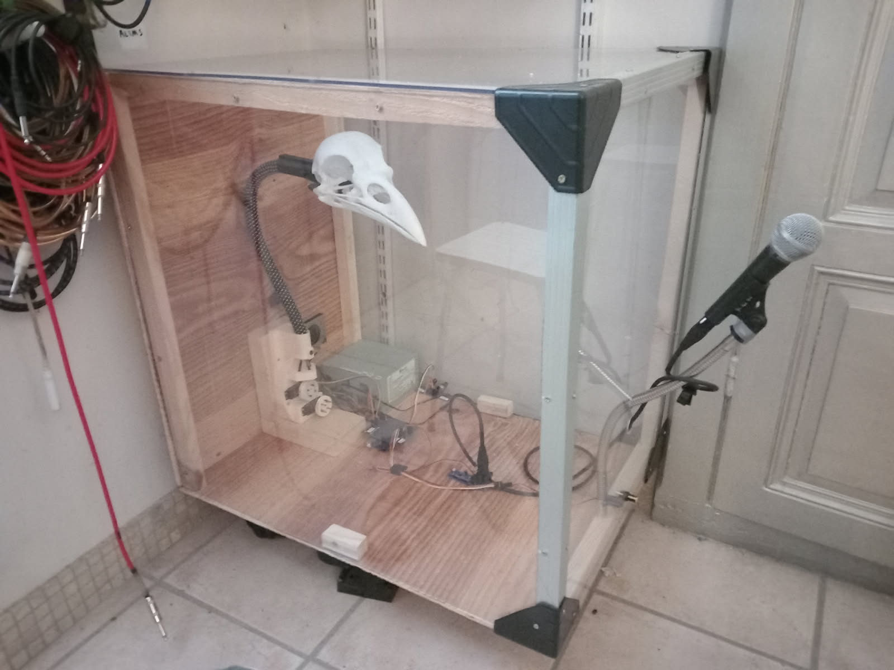
Petite install proposée par Gus du groupe de rap corbeautomates "les amis nos morts". Il ne sera malheureusement pas présent parmis nous, mais nous prête pour l'occasion cette petite attraction : chante dans le micro, bouge le joystick = le corbeau chante et danse avec toi !
[ LASERGAME ]
VENDREDI 21:15 > 22:15 Le Temple
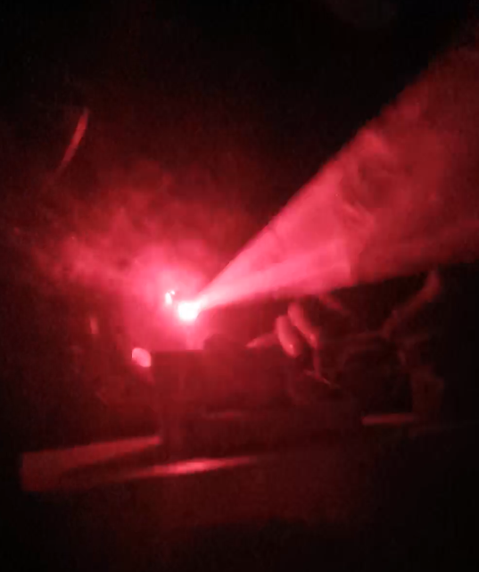
Laser Game est une installation interactive autour du son et de la voix. Grâce à un dispositif simple, elle permet de voir les vibrations de la voix en temps réel. Le public peut parler ou chanter et observer comment sa voix se transforme en formes lumineuses. L’intensité, le rythme et les variations de la voix créent des motifs visuels en direct.
animé par Rebecca Zidhane de l'association Bandes Passantes
[ LÉA LAIGNEL ]
SAMEDI 10:00 > 18:00 les Berges de Drôme
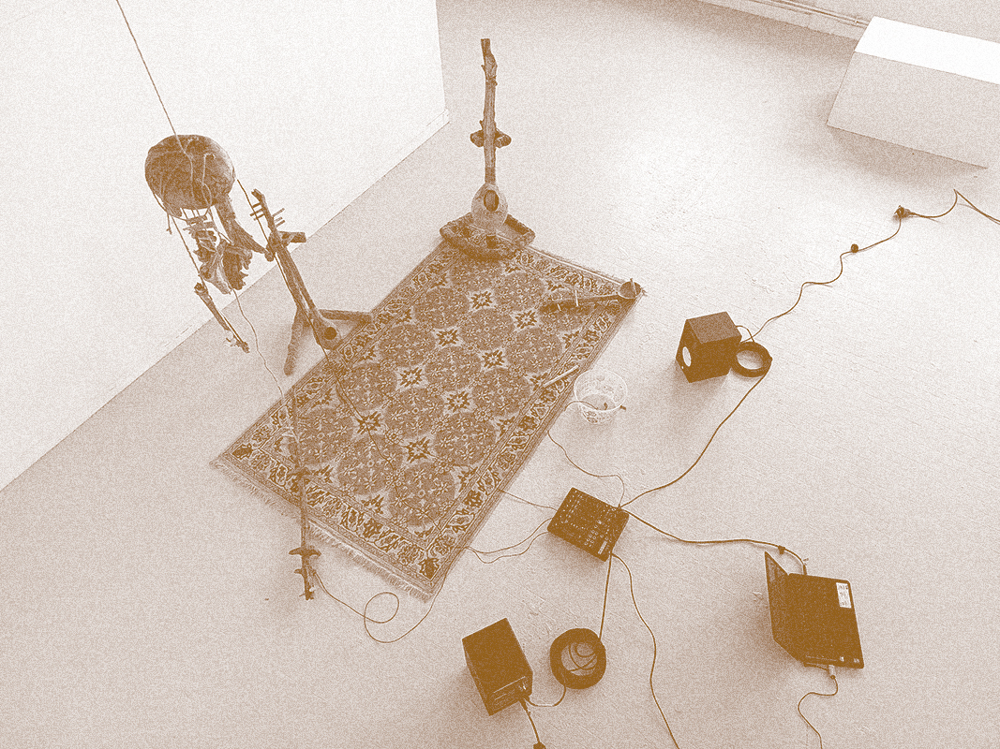
En associant des supports analogiques, comme la bande magnétique, à des outils numériques, Léa crée des collages à partir de fragments, de bruits et de silences. Field recordings, imitations de sons de la nature, et synthétiseurs se confondent pour former des paysages qui semblent familiers sans avoir jamais vraiment existé. Ces compositions sont autant de tentatives pour reconstruire des souvenirs qui n’ont jamais été vécus et pour imaginer des futurs où le monde vivant est préservé.
Léa pratique la lutherie sauvage, elle collecte et assemble des petits bouts de rien glanés sur les rivages des plages Normandes et au bord de la Drôme. Lors de ces différents moments de marche, elle enregistre les sons de celleux qui y habitent. Elle suggère une écoute attentive au monde vivant.
[ LECTEUR DE PIZZA ]
SAMEDI 20:00 > 22:00 les Berges de Drôme
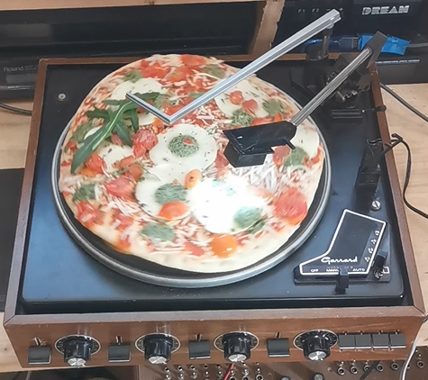
Fait de la musique avec ta Pizza !
[ MÉLANIE MÉTIER ]
DIMANCHE 17:00 > 18:00 Plus loin sur les Berges de Drôme...
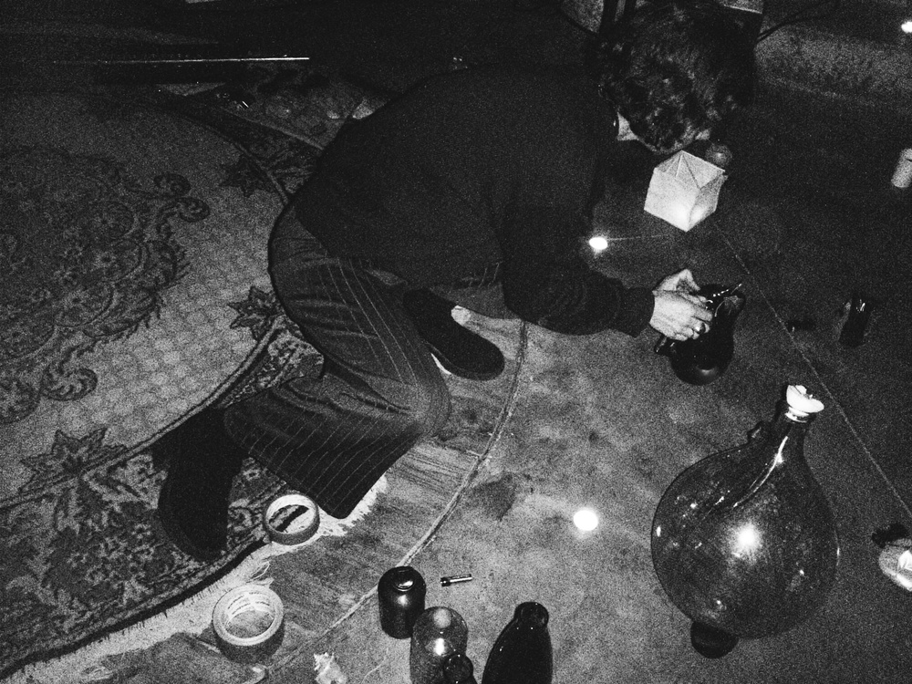
Mélanie Métier est architecte et artiste sonore établie à Marseille (Fr). Elle produit des oeuvres mêlant architecture, musique et documentaire radio.
Ses projets associent souvent des personnes isolées, peu entendues, qui font partie intégrante de son processus créatif, notamment via des structures médico-sociales. Dans ses projets, Mélanie porte attention à la cohérence entre le lieu, les gens et les créations qu’ielles présentent, notamment en déplacant notre écoute et notre attention vers des lieux cachés, des sons discrets.
Depuis un an, son travail se déploie autour de pratiques sonores mélant fieldrecording et lutherie construite par ses soins (objets percussifs à moteurs, rhombes, flûtes en cannes de Provence).
Elle se forme actuellement à l’électroacoustique à la Cité de la Musique de Marseille et à l'improvisation indienne à la flûte bansuri auprès d'Henri Tournier au sein de l'IIMM à Aubagne.
[ MUSIQUE LIBRE ]
SAMEDI 10:00 > 18:00 Les Berges de Drôme
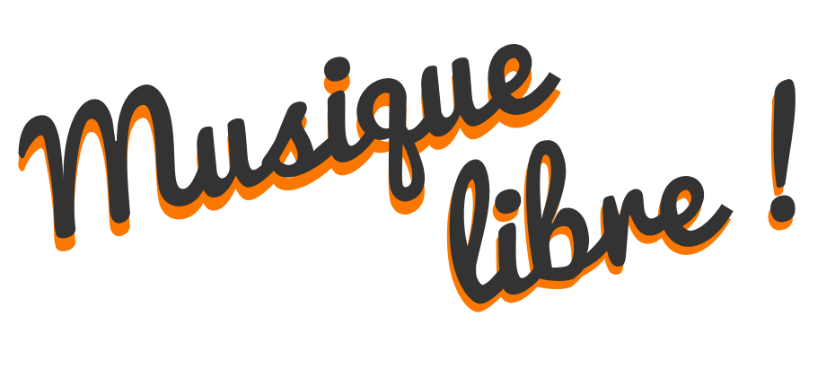
Stand sur les musiques libres, réflexions, exemples...
[ NOISECORN ]
VENDREDI 20:15 > 21:15 Le Temple
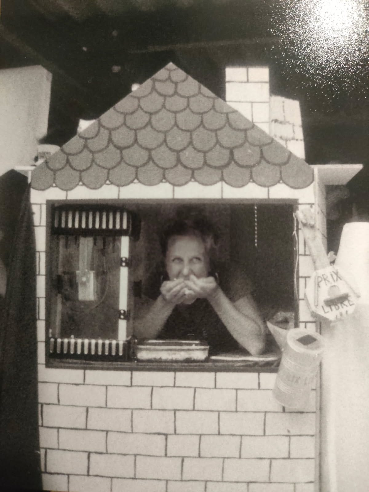
Du pop-corn, et de la noize !
[ NYET NYET NYET ]
SAMEDI 19:00 > 20:00 Les Berges de Drôme
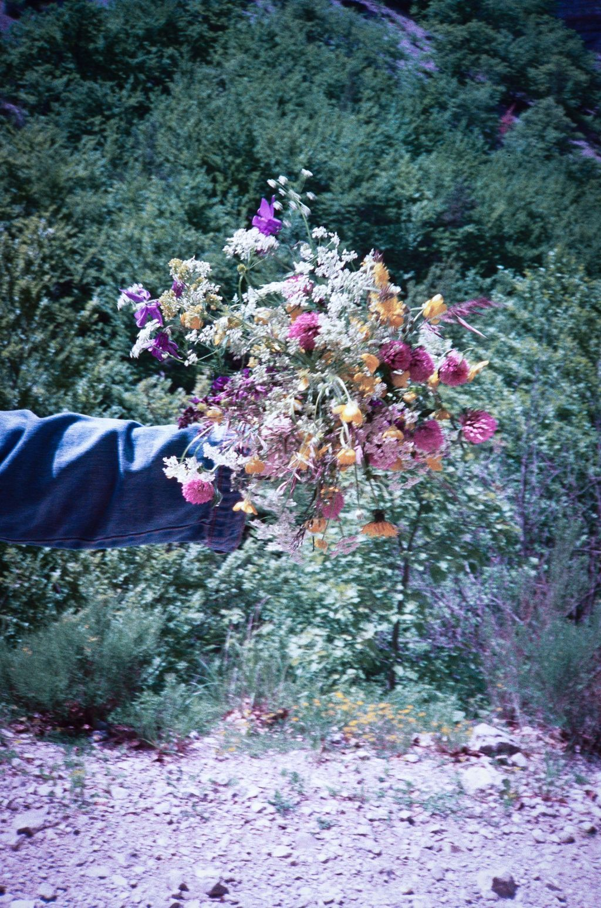
Trio de platines turbulent ~ sillons croisés à six mains
Héloïse Francesconi, Sean Drewry, Tyfen Guilloux.
« Dans la nature avec les instruments, avec les bruits, avec les esprits ».
À la frontière du dj set et du concert, du mix et de la composition temps réel, Nyet,
nyet, nyet fait dialoguer les sources, esthétiques et époques dans des performances
one shot.
S’y succèdent plages immersives électroacoustiques, grooves remixés, apparitions
orchestrales et morceaux subliminaux. Dans leurs pioches : musique concrète,
minimale, field recording, noise, free jazz, techno, ambient, folk, drumfunk, indus et
bizarreries glanées avec avidité. Inutile de vous asseoir.
Sean Drewry est un multi-instrumentiste vivant a Marseille. Sa pratique de
l'improvisation mêle sons fixés et gestes instrumentaux dans des assemblages
sonores faits de citations, de bruitages et d'auto-références.
Héloïse Francesconi est compositrice et musicienne. À la guitare électrique comme
à l’électronique, elle s’aventure autant dans un bruitisme sauvage que dans une
noise minimaliste, toujours à la recherche d’une matière organique et dynamique.
Elle est actuellement guitariste dans le trio Toru (noise instrumental / rock expé), a
co-fondé le trio HHH (ambient spatialisé), Beatum Teckels (théâtre musical) et
travaille sous son propre nom un projet solo au synthétiseur modulaire (drone, sweet
harsh, ambient). Sa musique est expérientielle, sensible, sonique et parfois radicale.
Tyfen Guilloux écrit de la poésie-fiction, compose des pièces acousmatiques et joue
dans plusieurs projets de musique expérimentale, en duo, trio, et parfois seule sous
le nom de Nynn. Elle est la moitié de Quel enfer !, musique de boucles magnétiques
avec Luci Schneider, et espère trouver un jour le temps d’éditer le 4ème opus de le
La Veille, objet-livre collectif à la thématique hybride dont elle porte le nom.
[ PARASITE PARK ]
SAMEDI 10:00 > 18:00 les Berges de Drôme
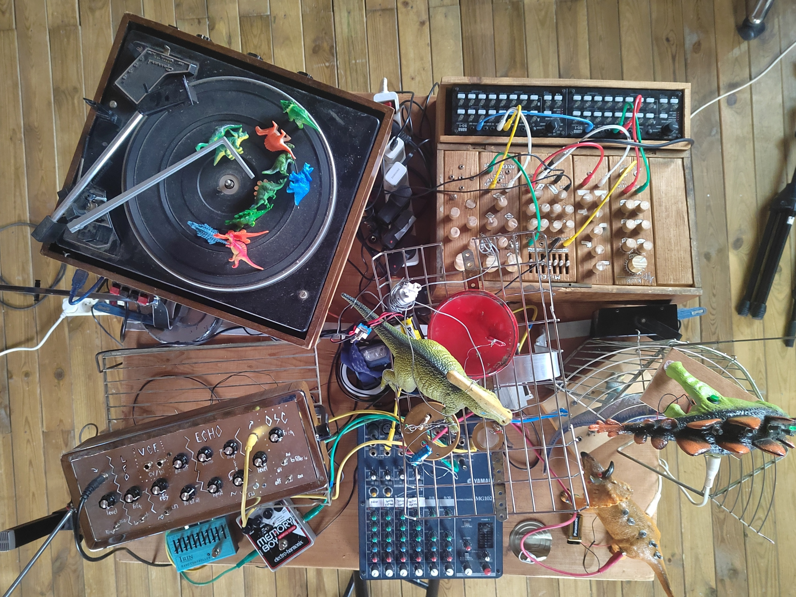
Synthétiseur fait maison et Dinosaures !
[ PARÉÏDOLIE ]
SAMEDI 10:00 > 18:00 les Berges de Drôme
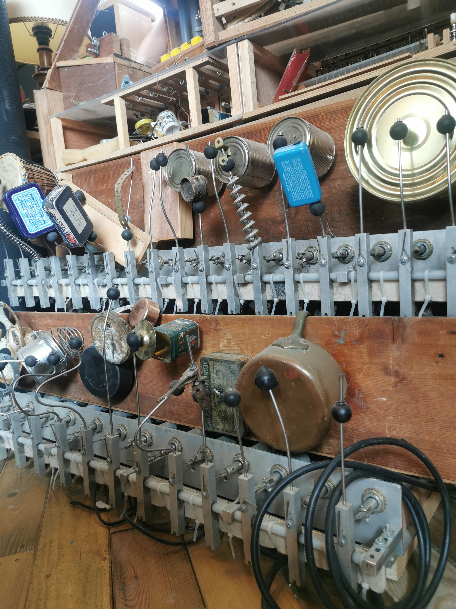
Boîtes à rythmes électro-mécaniques.. Automates !
[ PETIT NUAGE ]
SAMEDI 22:00 > 23:00 Les Berges de Drôme
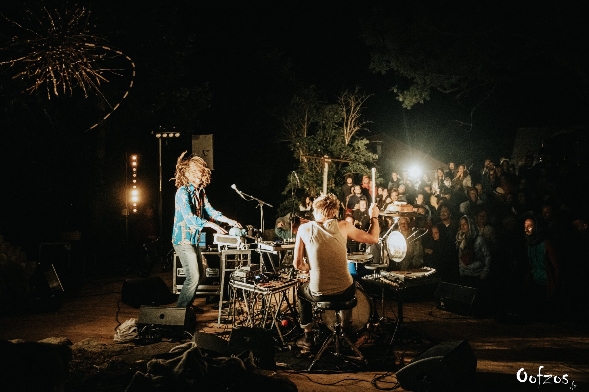
Une danse du soleil, unique et ravagée, indispensable et remuante à vous en séparer définitivement le cartilage de la chair. Le courant électrique nargue l’écho acoustique dans un ballet de fourmilière où les fantômes de la matière retournent à l’état sauvage.
[ PHONORESCENCE ]
VENDREDI 19:30 > 20:30 Le Temple
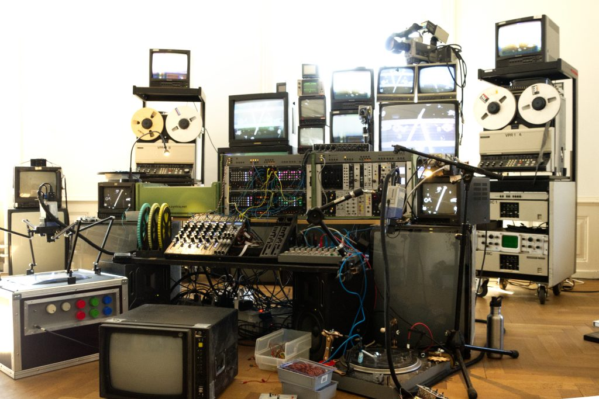
Michael Egger (1974) est un artiste multimédia, inventeur et bricoleur de Fribourg. Il conçoit et construit des dispositifs interactifs audiovisuels et méchatroniques à des fins artistiques et éducatives, pour le théâtre, des performances et des expositions temporaires. Actif dans les arts scéniques depuis 1995 en tant que scénographe, créateur lumière, musicien ou performeur. Musicien, il se tourne tôt vers le visuel et construit des instruments qui lui permettent d’improviser avec des images comme d’autres musiciens travaillent les sons.
Phonorescence: Quand les images produisent des sons et les sons s’illuminent. Grâce à des instruments imaginés et conçus par lui-même et son frère Max, Michael Egger fonde visuels et sons en un signal électrique tout à fait particulier. Des images instantanées retransmises par des caméras obsolètes sur des anciens téléviseurs se modulent entre elles et génèrent des fréquences audibles. De manière synchrone, des générateurs de sons influencent ces images, lesquelles produisent simultanément des sons. Ces boucles de rétroactions créent un organisme complexe autonome dirigé tel un orchestre par Michael Egger. Propulsées par le metronome d’une platine bidouillée, des pulsations rythmiques donnent naissance à des sons de drones, de clics et autres perturbations. Situé quelque part entre musique bruitiste et techno minimale, l’art visuel et sonore de Phonorescence croise la vidéo experimentale des années 70 avec l’ambiance électro contemporaine. Une expérience synesthétique dans laquelle le serpent se mord simplement la queue. Peu recommandable pour personnes sujettes à l’épilepsie.
[ POMPES IT UP ]
SAMEDI 10:00 > 18:00 les Berges de Drôme
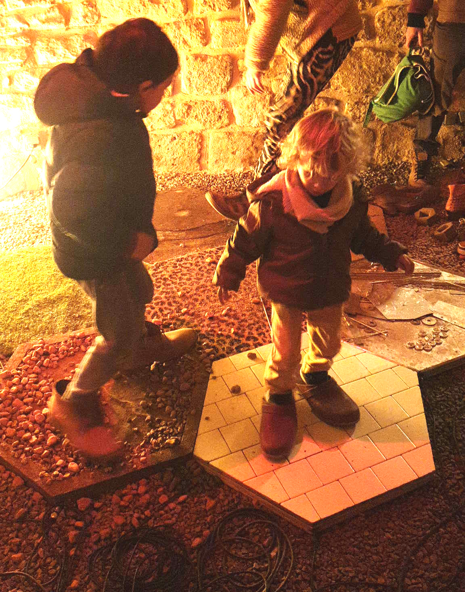
Un plancher amplifié et quelques chaussures traficotées. Trouvez votre propre pointure et grimpez sur le dancefloor pour frotter, glisser, taper du pied !
[ PRIMITIF ]
SAMEDI 10:00 > 18:00 les Berges de Drôme
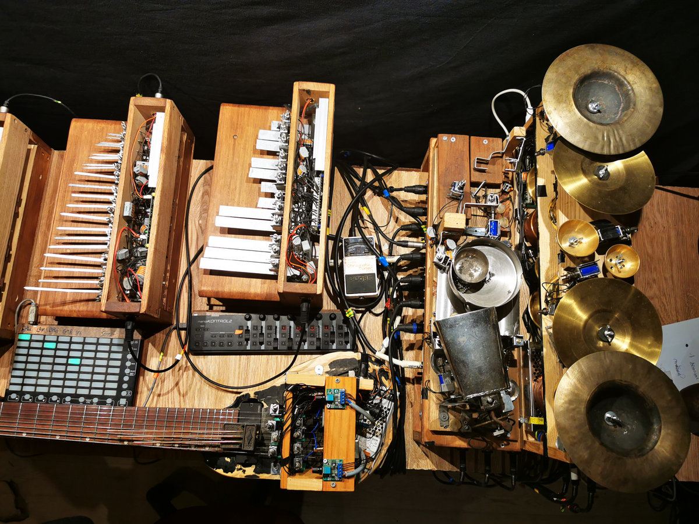
Primitif,c'est un concept original qui s'articule autour d'un orchestre électro-mécanique fabriqué maison,avec des influences d'Afrique Centrale,électronique,rock,xp.
Pas de concert cette fois, mais l'orchestre sera là !
[ RADIO SAINT FÉRRÉOL ]
SAMEDI 10:00 > 18:00 les Berges de Drôme
Radio Saint Férréol sera présente parmis nous pour réaliser un petit reportage audio !
[ RELIURES D'ONDES ]
SAMEDI 10:00 > 18:00 les Berges de Drôme
Ici, les livres ne se lisent pas seulement — ils se jouent.
Entre carnet bricolé, objet sonore et mini-instrument, chaque livre est une expérience à part.
Accès libre.
À manipuler sans mode d’emploi.
(animé par Rebecca)
Active au sein des associations Micro Contact & Bandes Passantes, elle crée des instruments insolites et objets sonores, souvent électroniques.
Elle anime toute l’année des ateliers 'lutherie sauvage" ouverts à différents publics, où l’on explore le son par le bricolage et l’expérimentation.
[ RESSAC ]
DIMANCHE 14:00 > 15:00 Place Centrale
(aka re:ssak) est un trio de quatre formé en 2022 à
Marseille.
Peaux de cloches, micro de flûtes, chants d’objets et ritournelles
de cailloux.
Un mélange d’instruments et d'objets trouvés : motifs répétitifs
et glossolalies électroacoustiques créent des paysages sonores à la
fois étranges et familiers.
[ ROMAIN VASSET ]
DIMANCHE 17:00 > 18:00 Plus loin sur les Berges de Drôme
Romain Vasset, multi-instrumentiste et
compositeur de musique électronique.
Passionné depuis toujours par les musiques improvisées, il cherche à
dialoguer avec des dispositifs imprevisibles pour ainsi convoquer la
présence et espérer une musique à venir. Ainsi, il enregistre chez lui
des séquences improvisées sur cassette avec différents matériaux et
créé avec son sampler des dispositifs aléatoires de déclenchement.
Son live est donc un éco-système d’intéractions, dans une hybridation
de sources allant de l’orchestration digitale à la musique bruitiste
avec comme point névralgique la clarinette de son père. C’est d’ail-
leurs avec cette clarinette qu’il oscille et rebondit en tentant d’ouvrir
un espace proche du mystique où les connaisseurs reconnaîtront ai-
sément ses influences du spiritual jazz (Jon Hassell, Joshua Abrams,
Pharoah Sanders, Alice Coltrane, ... ).
Il a produit un premièr EP «Paroi/Peau» lors d’une résidence à SILO en
2023 et s’apprête à sortir son premier album «Les Obsidiennes» sur le
label allemand Cosima Pitz.
Il a aussi créé le duo }Ï{ avec Louise Boghossian (SPMDJ), joue avec
Blumi, et fait partie du super-groupe Hannah Miette (dirigé par Lucien
Chatin, avec Emma Broughton, Flora Hibberd, Kate Stables, Margaux
Delatour, et Rozi Plain)
[ SÉRIGRAPHIE SONORE ]
SAMEDI 10:00 > 18:00 Les Berges de la Drôme
 (descriptif à venir)
(descriptif à venir)
[ SERPENT NU ]
SAMEDI 21:00 > 22:00 les Berges de Drôme
Le serpent avance, se recroqueville et se déplie, ses écailles luisent, respirent, louvoient dans la
poussière. Sa musique se construit, s’écroule et se relève mille fois, les sons s’agrègent puis se
renversent.
Le serpent s’enroule sur lui-même - en cercle, au centre, nombril du son. Il emprunte nos circuits
fabriqués, explore, se transforme. Hypnotique constriction : cris des machines, pleurs et souffles,
mots, grincements, volutes. Le serpent épouse nos sinusoïdes. Semi-immergé, il s’approche, te siffle
à l’oreille, glisse son sang froid sur ta peau chaude. Au fond d’une transe improvisée, le serpent
danse en même temps qu’il mue.
[ SIGMA ]
DIMANCHE 16:00 > 17:00 Plus loin sur les Berges de Drôme...
Installation d'un dispositif d'écoute à mix participatif d'une œuvre réalisée avec du feedback. Deux pistes, trois platines, quatre vitesses : l'infini de possibles ! Environ 45 min.
[ SONELEC-MUSIQUE ]
SAMEDI 14:00 > 18:00 Les Berges de Drôme
Rémy Mallard est le créateur de Sonelec-Musique, un site devenu au fil des années une référence incontournable pour les amateur·ices d’électronique audio DIY.
Depuis le début des années 2000, il y documente avec une grande précision la conception de circuits sonores : oscillateurs, générateurs, effets, montages expérimentaux… Le tout accompagné d’explications accessibles, pensées pour être comprises en dehors des cadres académiques.
Son travail de transmission, rigoureux et généreux, a contribué à rendre l’électronique musicale plus ouverte et plus partageable, et a accompagné toute une génération de bricoleur·euses dans leurs premières explorations.
À travers cette documentation patiente et indépendante, Rémy Mallard participe à sa manière à une histoire discrète mais essentielle : celle des savoirs qui circulent librement.
[ VENTILORG ]
SAMEDI 10:00 > 18:00 les Berges de Drôme
36 ventilos d'ordi, 2 inductances, joue avec les champs magnétiques de cet orgue un peu spécial...
[ WINDOWS 93 ]
VENDREDI 23:00 > 00:00 Le Temple
Windows93 est un système d’exploitation fictif et instable, quelque part entre œuvre interactive et instrument détourné. Un espace où le code, le bruit et les accidents deviennent matière à expérimenter.
[ YOGAÏE ]
SAMEDI 10:00 > 18:00 Les Berges de Drôme
YOGAÏE est un jeu dans lequel vous devez détruire des postures de yoga en sautant dessus tout en étant sur votre ballon de gym.
[ ZAP ORCHESTRA ]
VENDREDI 19:00 > 20:00 Le Temple
Ressuciter la télécommande...